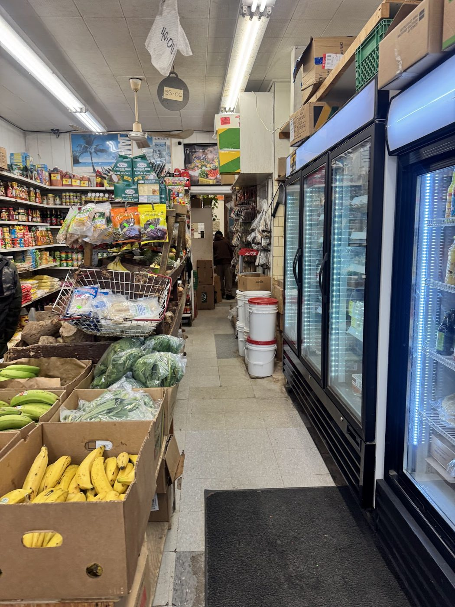

Caribbean grocery · Kensington Market, Toronto
Green plantains, scotch bonnets, a taste of back home.
A small grocery on Baldwin Street packed with Caribbean produce, spices, snacks and pantry staples. Reviewers say if you need it, “they got you.”
- Fresh scotch bonnets
- Green plantains
- Hard-to-find snacks
- Friendly staff
What you’ll find on the shelves
Fresh produce & peppers
Green plantains, yams, pumpkin, thyme, scallion, scotch bonnet and Guyanese peppers, ginger and turmeric, per reviewers.
Pantry & spices
Curry powder, red palm oil, tinned ackee and ginger tea. Reviewers mention plenty of other Caribbean and island staples.
Snacks & treats
Hard-to-find favourites like Eclipse crackers and coconut drops. One reviewer calls it the “best spot to get my Jamaican treats.”
This list comes from Google reviews, review photos and the store’s Google listing (category: supermarket). Stock changes, so call ahead if you need something specific. No prices are shown because the store doesn’t publish any.
Customer find · Eclipse crackers
Searched for “soo long” and found them here
“Great options for Caribbean foods. I was searching for Eclipse crackers for soo long, and was able to find some here, plus more of my favorites from back home. The customer service was 10/10.”
Lisa Lisa, Google review · photo from the review
What customers say
4.8 ★ from 256 Google reviews (checked Nov 4, 2026). Quotes are word for word. Each one says where it was read: on the Google listing itself, or on a public page that copies reviews. Google shows only a handful of reviews without signing in, so the rest come from two directory copies: one shows no reviewer names, the other shows no dates.
★★★★★
Great options for Caribbean foods. I was searching for Eclipse crackers for soo long, and was able to find some here, plus more of my favorites from back home. The customer service was 10/10.
★★★★★
This place is the bomb. When I need true green plantains, they got you. Ginger tea, they got you. Freshest scotch bonnets, they got you. I could go on and on. If you are not shopping here you are missing out. Also have to get back to my tostones so will not elaborate. Thank you.
★★★★★
Fresh Caribbean groceries from pumpkin, yams, Irish, thyme, scallion scotch bonnet, Guyanese peppers, tumeric, garlic & ginger many more good finds for your authentic tasting Caribbean foods.
★★★★★
Friendly and helpful staff! Best spot to get my Jamaican treats!
★★★★★
Taste and experience a the Caribbean right in Downtown. Can find all types of food products and provision.
★★★★★
Has all my groceries from my home country and other cultures.Great staff
★★★★★
Well stocked. Friendly staff. Reasonable prices. Feels like you’re stepping through a portal into Jamaica itself.
★★★★★
I went there earlier to today. I was happy to find that they have red palm oil. I didn’t need to go far to get it. I bought also some Caribbean snacks, and curry. I definitely well go back again. The gentleman was nice and friendly.
★★★★★
Delightful little shop that often has fantastic fresh hot peppers (Scotch Bonnet, Scorpion and others) at great prices, along with fresh produce and grocery items. The staff if extremely friendly and more than happy to answer any questions.
★★★★★
Its like walking into a store at the market in Trinidad. Absolutely love that I found this store!
★★★★★
Small little Jamaican food store in Kensington. Owned by Jamaicans the store had authentic ingredients. The staff we’re very friendly and welcoming. I was stopping by to see if they had any callaloo patties as those are hard to find in Toronto. No dice, but did manage to buy a coconut drops just for the fun of it. The store is clean, well organized, and full of fresh food. I didn’t see any wilting produce or food that just shouldn’t be on display. I will definitely return if I am in the are, if not to grab some groceries, then to chat with the nice people who own the place.
★★★★
I love to visit and give my business to Caribbean Corner. They have a great selection of different island food items and ingredients, and tons of Caribbean charm in their tiny little space. I come here to buy my plantains, which I have been addicted to the past couple months. fried plantains. That’s another story. Anyhow, I spent just over a month in the Caribbean this spring and to come in to this store. if I didn’t look outside, I could swear I was back there. I would highly suggest stopping in to check out their selection. Especially, if you are looking to add some Caribbean flavour to your kitchen!
Inside the shop
Real photos from Caribbean Corner’s public Google listing and its customers’ reviews. Tap to enlarge.
Visit the shop
171 Baldwin St
Kensington Market, Toronto, ON M5T 1L9
| Monday | 8:30 a.m.–6:30 p.m. |
|---|---|
| Tuesday | 8:30 a.m.–6:30 p.m. |
| Wednesday | 8:30 a.m.–6:30 p.m. |
| Thursday | 8 a.m.–7 p.m. |
| Friday | 8 a.m.–7 p.m. |
| Saturday | 8 a.m.–7 p.m. |
| Sunday | 9:30 a.m.–6 p.m. |
These are the hours on Google today. Yelp and other directories list slightly different hours, especially on Sundays, so call if you’re cutting it close.